New York Times Website
Eye tracking study for a precise understanding of reading patterns and discover article legibility improvements.
Using Tobii and SMI hardware
Using Tobii and SMI hardware
Included Bose Frames and Ultra Open Earbuds
Tested with Newark Police Department
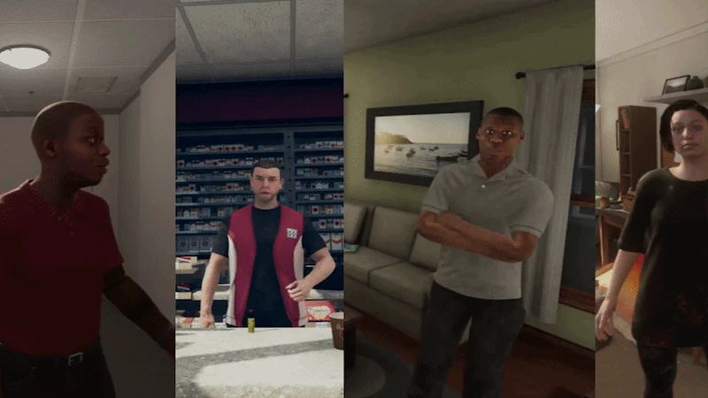
Overlapped with the early Instacart partnership
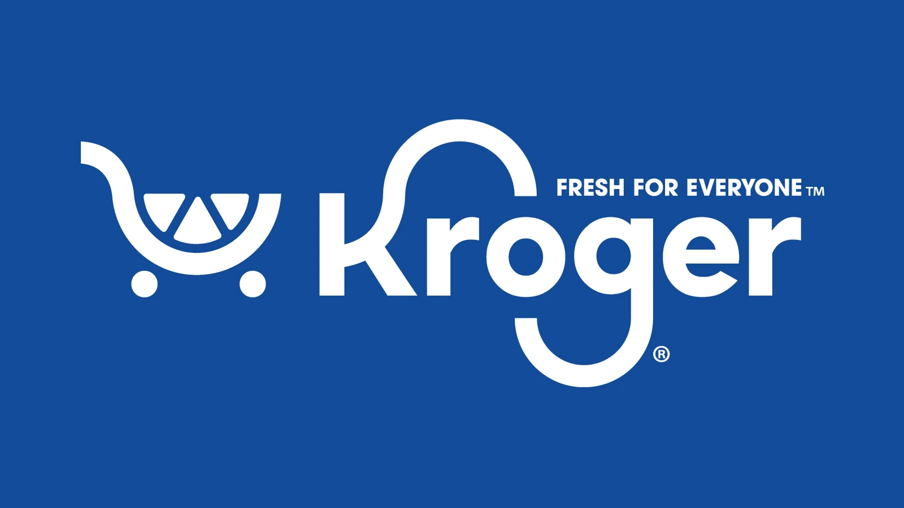
On-road testing with riders

Design backed by gameday research
Covered Google Home and Amazon Echo
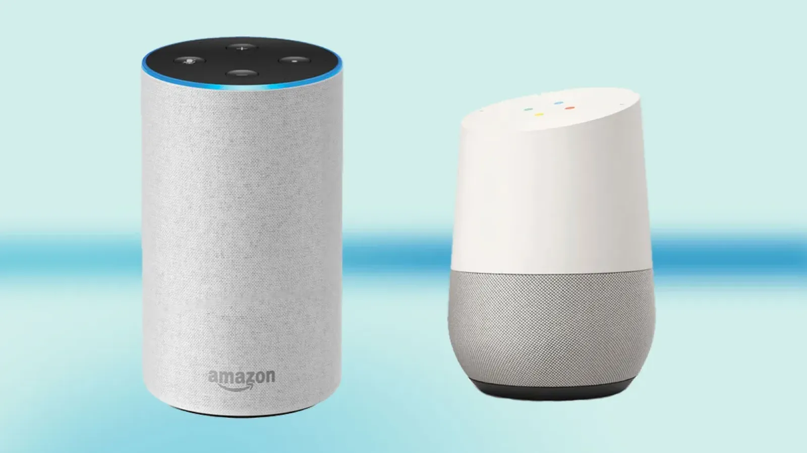
Improved Alexa skill performance by 36%
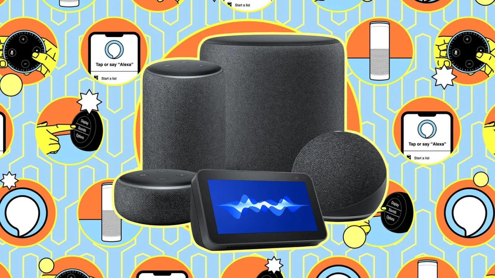
Launch research and design iteration
COVID-19 pandemic emergency project
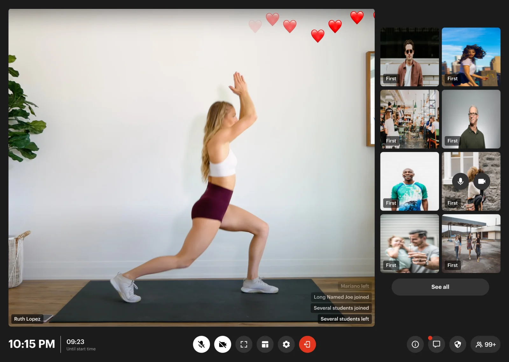
30% conversion increase during testing
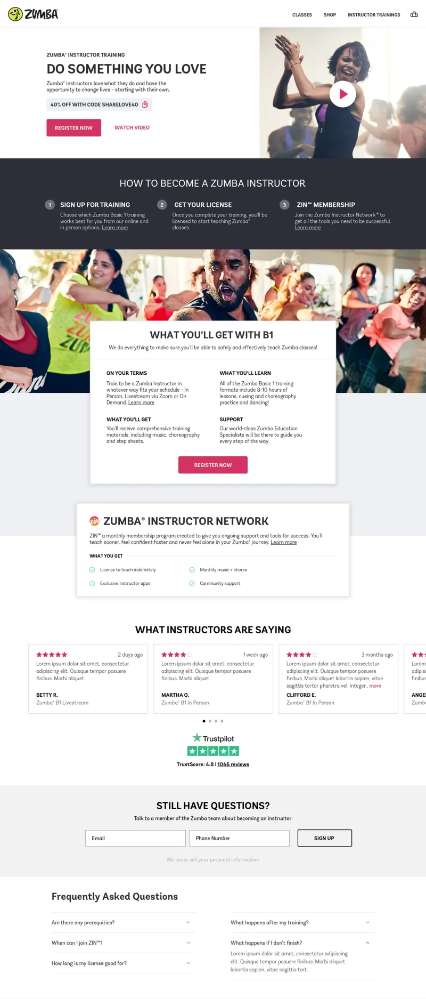
Fitness content creator platform
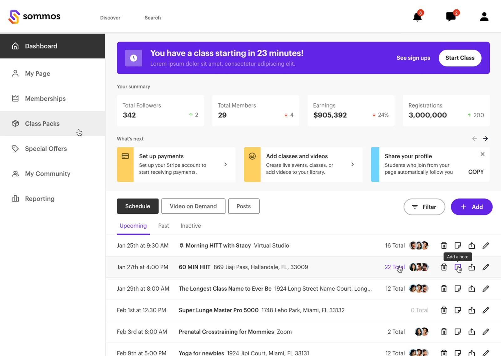
Evolution of the Zumba Virtual Class Platform
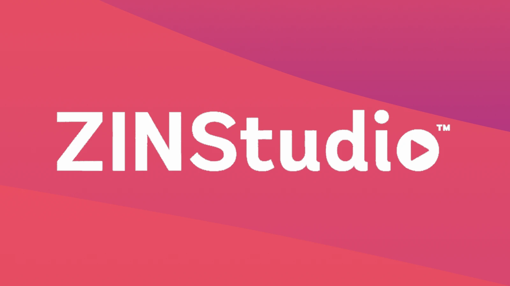
Early AI and ML algorithms
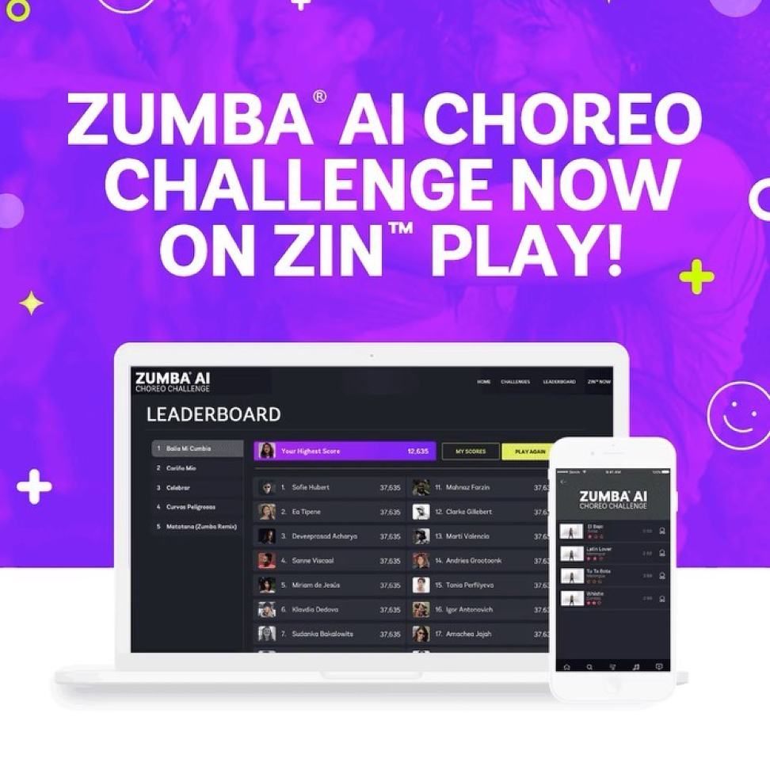
Findings motivated urgent changes
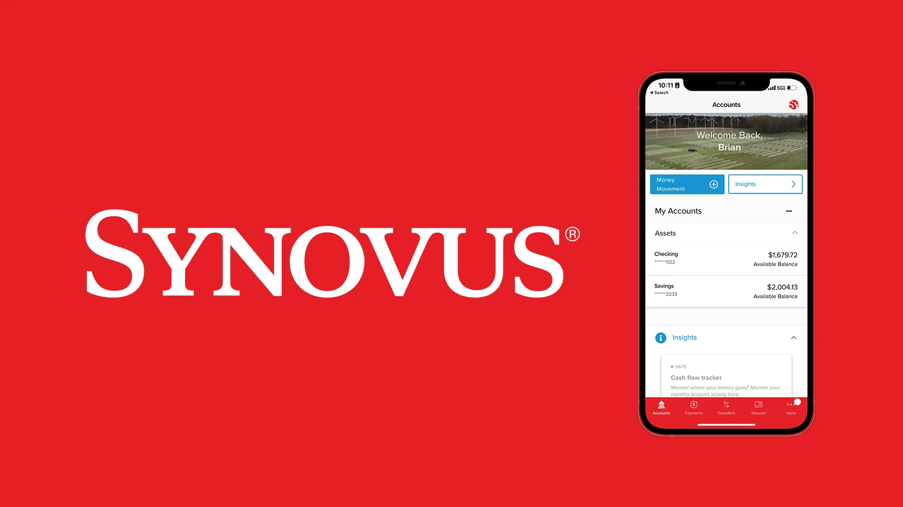
Used analytics to drive design decisions
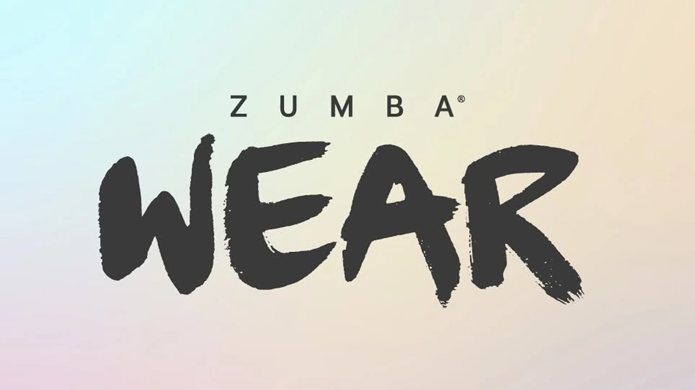
Expanded template libraries and tools
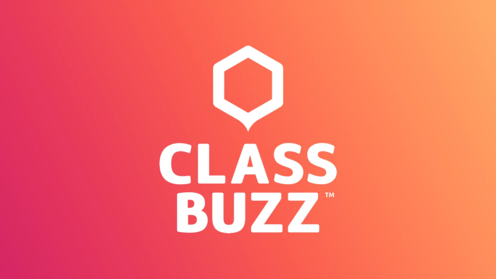
Reduced data entry time by 78%
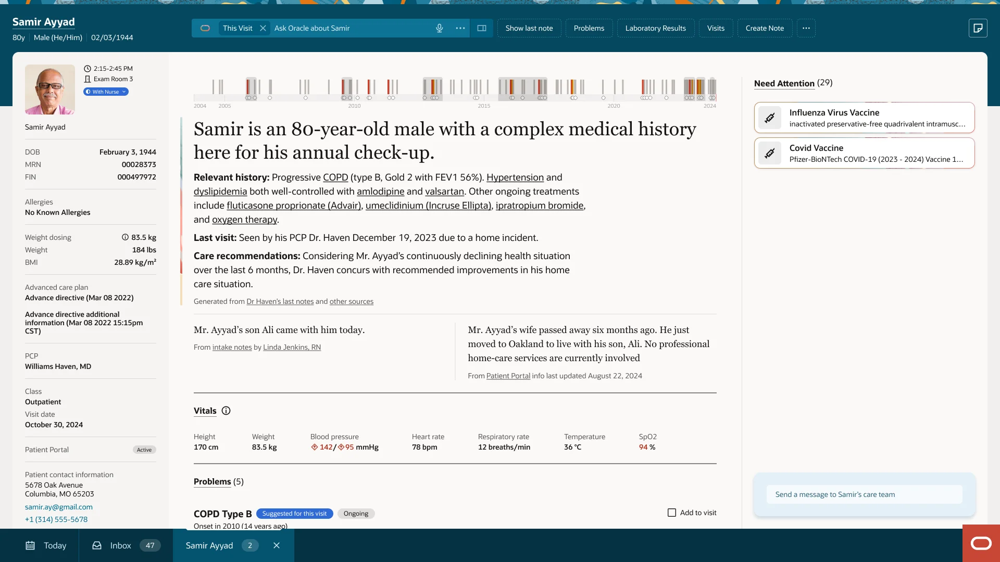
Lead designer from discovery to shipping
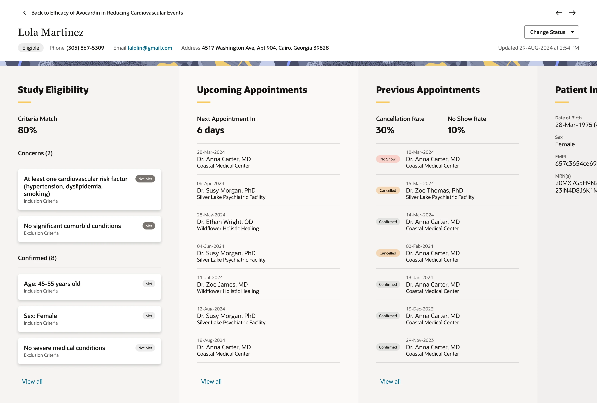
Patent pending